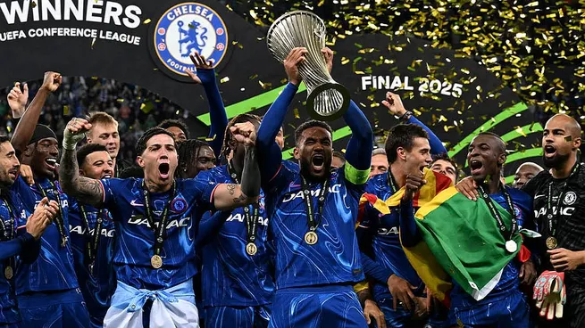

Latest Posts

A Historic Encounter This final marks the first-ever competitive meeting between Paris Saint-Germain and Inter Milan, making it a historic clash in European football. PSG, aiming for their maiden Champions League title, have previously reached the final in 2020 but were defeated by Bayern Munich. Inter Milan, on the other hand, are seeking their fourth European Cup/Champions League title, with their last triumph dating back to 2010. 🔥 Team Profiles Paris Saint-Germain (PSG): Under the guidance of manager Luis Enrique, PSG have undergone a transformation, focusing on a cohesive team dynamic rather than relying solely on star power. Their journey to the final has been impressive, with notable victories over Arsenal and Aston Villa.
CHELSEA CLINCH HISTORIC CONFERENCE LEAGUE HISTORY
Chelsea Football Club achieved a historic milestone on Wednesday night, securing a 4–1 comeback victory over Real Betis in the UEFA Conference League final at Wrocław Stadium in Poland. This triumph not only clinched Chelsea’s first-ever Conference League title but also made them the first club to win all four major UEFA European trophies, Champions League, Europa League, Cup Winners’ Cup, and Conference League. Match Overview The match began with Real Betis taking an early lead in the 9th minute. sco delivered a precise assist to Abde Ezzalzouli, who slotted the ball past Chelsea goalkeeper Filip Jørgensen, giving Betis a 1–0 advantage. Chelsea responded with increased pressure but found themselves trailing at halftime. In the second half, Chelsea turned the game around with a series of decisive goals. Enzo Fernández leveled the score in the 65th minute with a header from a Cole Palmer cross. Just five minutes later, Palmer provided another assist, this time to Nicolas Jackson, who put Chelsea ahead 2–1. Jadon Sancho extended the lead to 3–1 in the 83rd minute with a well-placed shot into the bottom corner. Moisés Caicedo sealed the victory in stoppage time, capitalizing on a deflection to make it 4–1. Cole Palmer’s Impact Cole Palmer was instrumental in Chelsea’s comeback, earning the official Man of the Match honors. His two assists were crucial in turning the tide of the match, showcasing his vision and composure under pressure. Palmer’s performance has led to discussions about his potential candidacy for the Ballon d’Or, with many praising his exceptional contributions throughout the season. Manager’s Perspective Chelsea manager Enzo Maresca expressed immense pride in his team’s resilience and tactical execution. He highlighted the importance of the victory in solidifying Chelsea’s status as a dominant force in European football. Maresca’s strategic adjustments in the second half were pivotal in overturning the deficit and securing the win. Historical Significance This victory marks a significant achievement for Chelsea, adding the Conference League title to their illustrious European honors. The club now stands as the first to have won all four major UEFA club competitions, underscoring their consistent excellence on the continental stage.
Meet the fresh talent changing the game.

Training Tips from the Pros
Secrets of high-performance athletes.